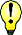

|
| Woher kommt der Name Robinie?
|  Die Robinie wurde nach dem französischen Botaniker Jean Robin benannt.
Er brachte die Robinie vor 400 Jahren von Amerika nach Europa.
Sie wird auch Scheinakazie oder Falsche Akazie genannt.
Echte Akazien wachsen in Afrika.
Auf Englisch heißt die Robinie Black Locust. |